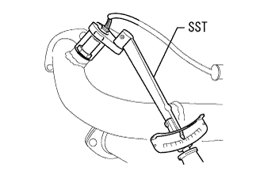
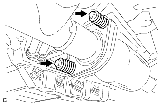
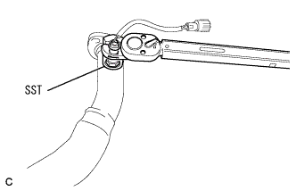

Oxygen Sensor (2GR-FE) Installation |
| 1. Oxygen Sensor Installation |
 |
Using SST, install the oxygen sensor.
Route the oxygen sensor connector into the cabin and connect it.
| 2. Install Exhaust Pipe Assembly Center |
 |
Install with 2 new gaskets, 2 nuts and 2 bolts.
 |
Install the exhaust center pipe assembly with 2 bolts and 2 compression springs.
Connect the oxygen sensor No.2 connector.
| 3. Oxygen Sensor NO.2 Installation |
 |
Using SST, install the oxygen sensor to the front exhaust pipe assembly.
Connect the oxygen sensor NO.2 connector.
| 4. Install Engine Under Cover NO.1 |
Install the engine under cover No.1 with the 6 bolts and 7 clips.
| 5. Install Engine Under Cover |
Install the engine under cover with the 4 bolts and 4 screws.
| 6. Inspect for Exhaust Gas Leaks |
Check that there are no exhaust gas leaks from the locations shown in the illustration (exhaust pipe joints and each sensor installation area).